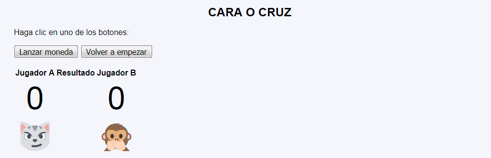
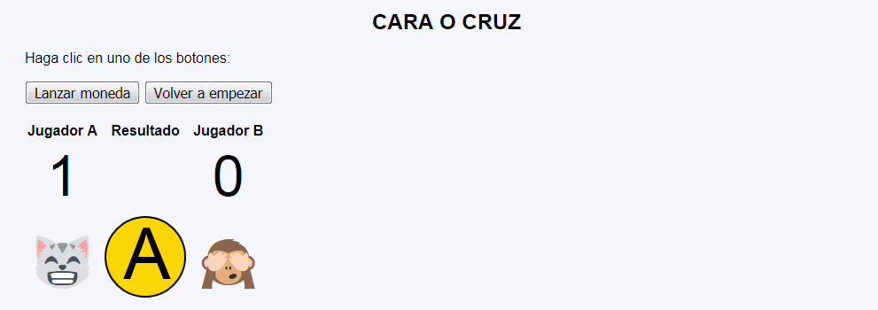
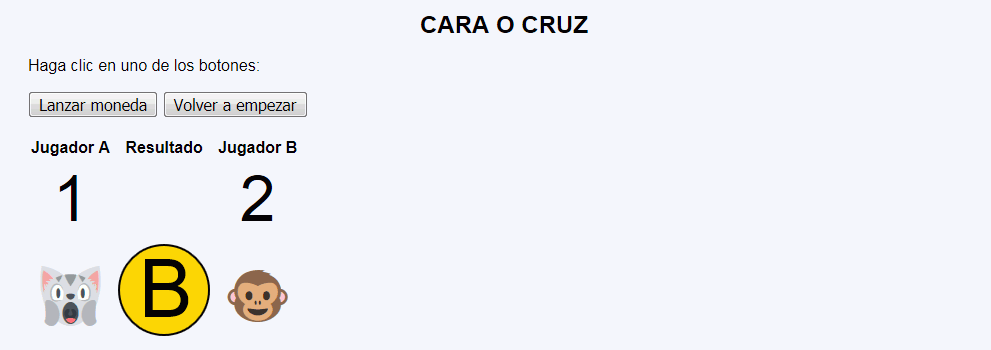

Cara o cruz - Ejemplo de programa
Nota: El día del examen los alumnos no tienen acceso a este ejemplo, solamente tienen acceso a las capturas del apartado anterior.
Un ejemplo de programa puede probarse en la ventana siguiente:
En este ejercicio se debe crear un programa que muestre una partida del juego "Cara o cruz".



<table style="text-align: center;">
<tr>
<th>Jugador A</th>
<th>Resultado</th>
<th>Jugador B</th>
</tr>
<tr style="font-size: 400%">
<td>1</td>
<td></td>
<td>2</td>
</tr>
<tr style="font-size: 400%">
<td>🙀</td>
<td><img src="img/b.svg" alt="B" title="B" width="100" height="100"></td>
<td>🐵</td>
</tr>
</table>
Nota: El día del examen los alumnos no tienen acceso a este ejemplo, solamente tienen acceso a las capturas del apartado anterior.
Un ejemplo de programa puede probarse en la ventana siguiente: